Infrastructure
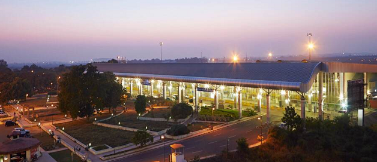1. Construction of Water Supply and sewerage System
Water Supply:
(Total Requirement = 91 MLD)
- Wadgaon Reservoir (at 34 km.) as source of water supply
- Dual water supply system
- Total 8 ESR’s and 5 GSR’s constructed in the area
- Water Treatment Plant (20.64 MLD)
- Network length – about 100 km.

Sewerage System
- Underground sewerage system of 38.8 km. length
- Total 10 no of Sewage sump and Pump houses constructed
- Sewage Treatment Plant (39 MLD)
- Tertiary Treatment Plant (77 MLD)
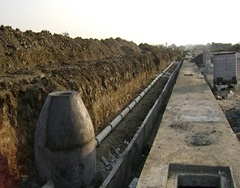
2.Construction of Roads
Total Length of roads - 54.6 km.
consisting of
- 6 - lane road - 03.50 km.(Rigid pavement).
- 4 - lane road - 18.30 km.
- 3 - lane road - 07.50 km.
- 2 - lane road - 24.14 km.
- 1 - lane road - 01.20 km.
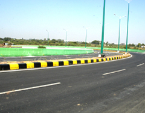
3.Telephone Exchange Building
Telecom Exchange Building consists of
- Main exchange building
- Transmission tower
- 3 nos. of RSU
- Trans-receiver station
- Transformer room
- Security room
- DG yard etc.
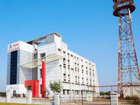
4. Fire Station
- Space for parking of 4 Fire Engines
- Office , Parade Ground, Drill Tower, Repair Ramp, Petrol Storage Tank
- Under Ground water Tank of 1 lac lit. Capacity
- Officers’ and Firemen's’ Quarters
- Fire tender Procured
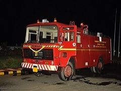
5. Gate Complex
Allied Works
- Toilets : At 3 locations in SEZ area for visitors
- Bus stop : Steel structure with benches at 6 locations
- Kiosks : Concrete structures as outlets for selling various items at 5 locations
- Interlocking Pavers : At footpaths for pedestrian walking
- SEZ area with 8 nos. toll booth, Weigh bridge platform and cabins
Gate plaza
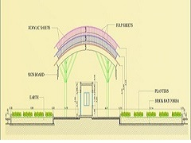
6. Construction of Storm Water Channel
- For collecting the storm water from MIHAN area & discharging into existing tanks viz. Dahegaon and Telhara
- The total length of channel is 3.61 km.
- Retaining wall along Dahegaon Tank
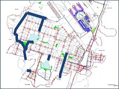
7. Construction of Boundary Wall
- Boundary wall is a mandatory requirement as per SEZ act.
- Length of wall 26.5 km. Height 1.6 m. + 0.6 m. (barbed wire fencing)
- The boundary wall consists of concrete panels pre-stressed at factory and erected at site
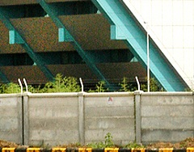
8. Construction of 384 Tenements
- 4 storied, G+3 , 18 Buildings comprising of 1 BHK flats
- Built up area of each tenement 31.3 Sq.m.
- Facilities like internal road, landscaping, electrification, plumbing & sewerage, society office, Guard room etc.

9. Construction of Pre-Engineering Building
- Carpet area of warehouse – 4,00,000 Sq.ft.
- Allotted to M/s Future Supply Chain Solutions Ltd. (FSCSL) on Leave and Licence basis for initial period of 14 years
- The project consists of Pre-Engineered Building, utility blocks and other infrastructure works like roads, storm water drains, compound wall, other external development work etc.
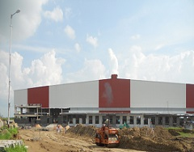
10. Construction of Central Facility Building
- Building structure inspired from book holder & folding chair
- G+ 3 structure with carpet area 174997 Sq.ft.
- Car parking capacity about 120 at basement
- MADC and DC’s office exist here
- For energy saving long face oriented towards North
- Building provides incubation space with fire protection & HVAC for units interested in SEZ
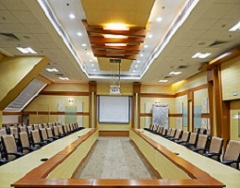
11. Power Distribution in Panjari
- Tapping of power from 132 KV substation at Panjari by underground cable up to MADC substation near ROB to MIHAN
- Total Connected Load – 3.343 MW
- Further power distribution network up to threshold of consumer within rehab area
- Handing over the entire operational network to MSETCL / MSEDCL.

12. Construction Of Extentended Link Taxiway in MIHAN,Nagpur
- Total Project Cost :43.49Cr
- Lenght of the Taxiway :1.4km
- Total width of Taxiway :46m
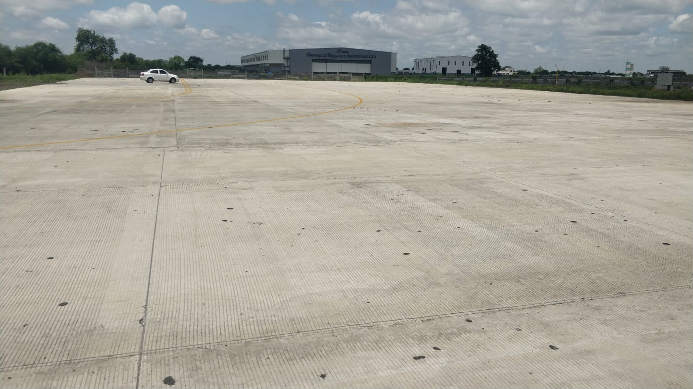